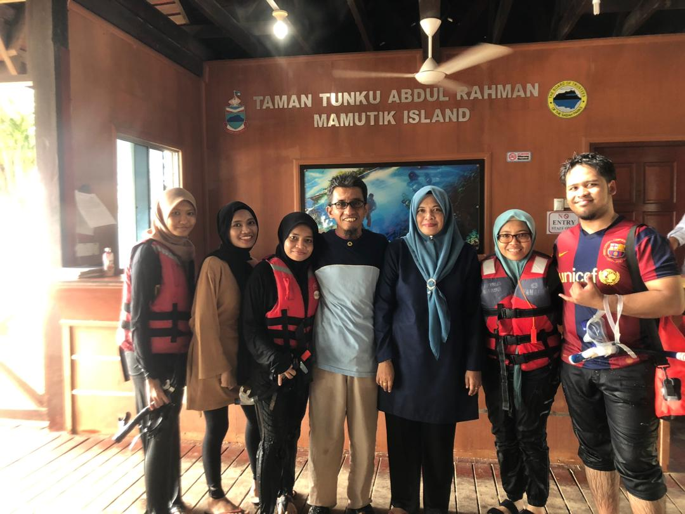
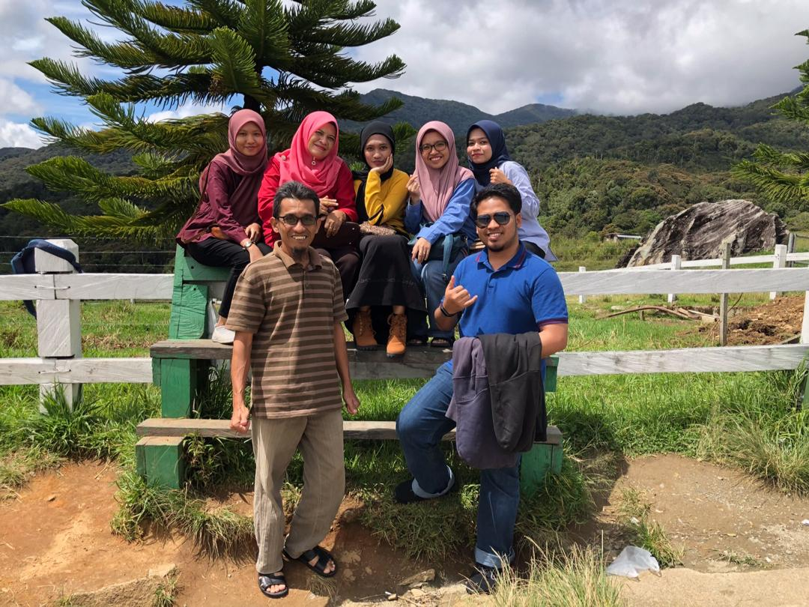
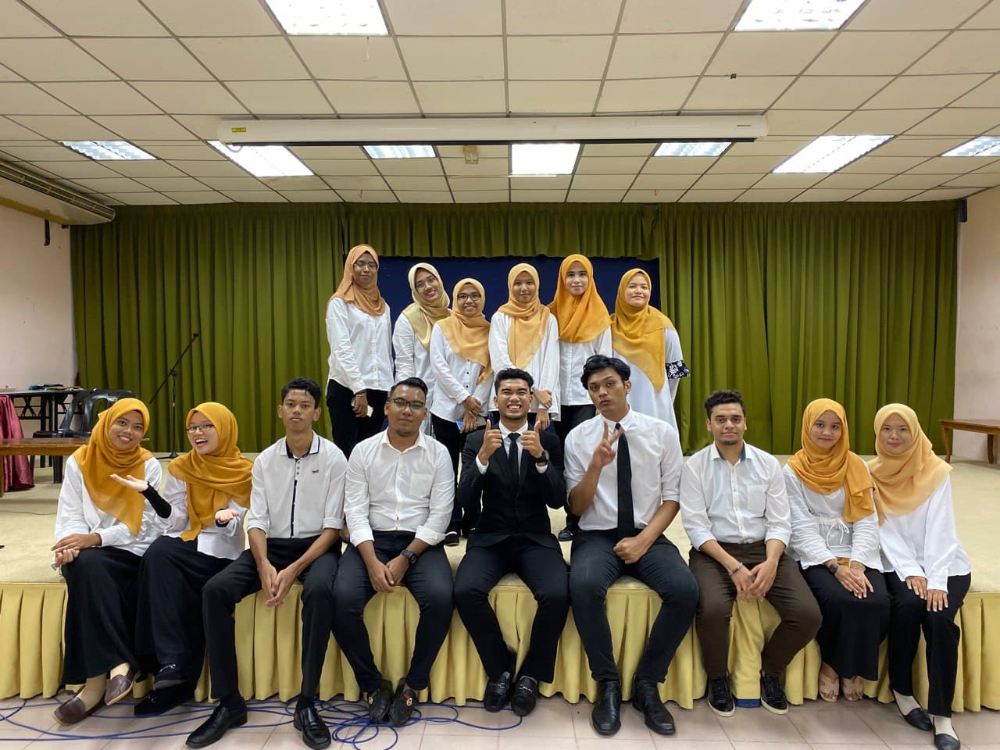
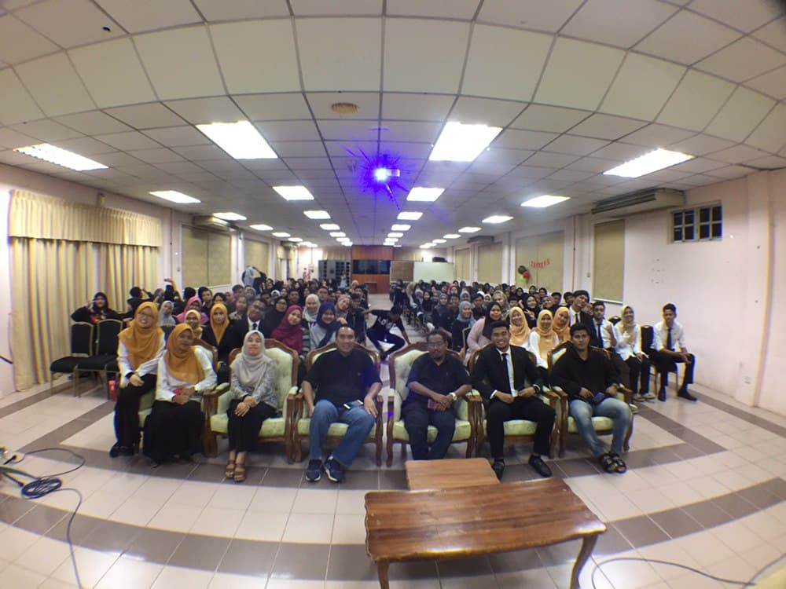
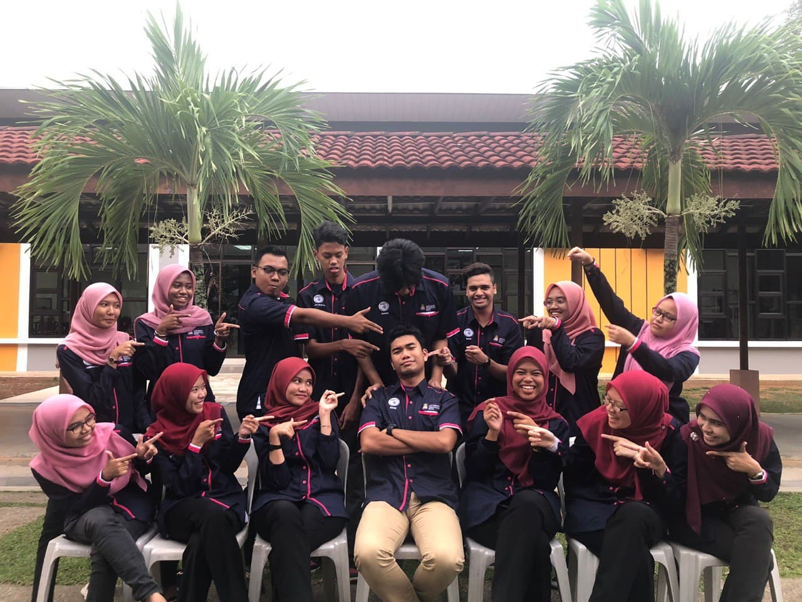
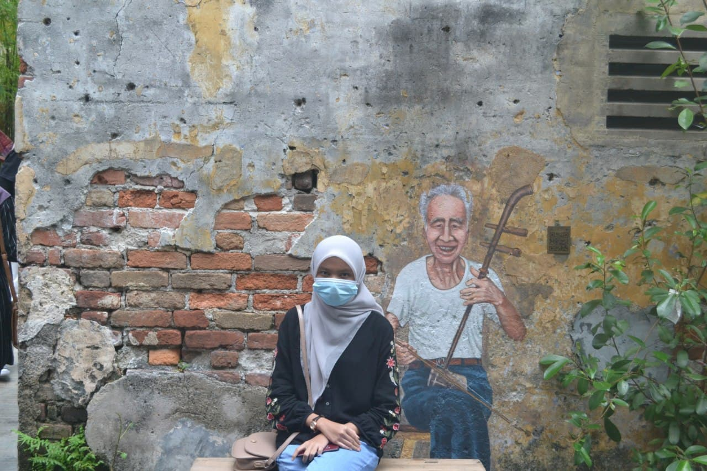
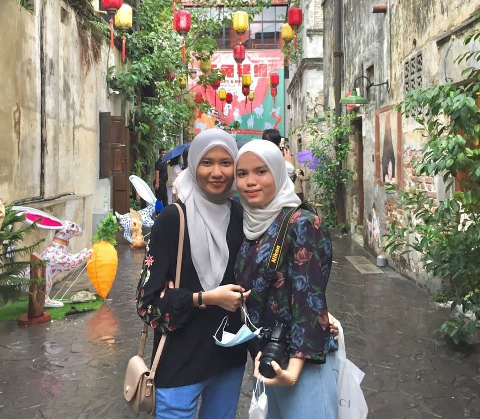
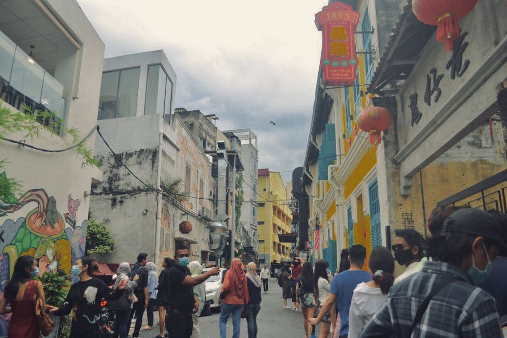

Bonjour Everyone!
Have a great day ahead! 🌻
Trip Holiday to Sabah
January, 2019
My whole family were having an amazing trip to Sabah during my semester break. Sabah is a peaceful place with the view and can see their unique culture environment. We have visit with so many places which is Desa Dairy Farm Sabah, Pasar Filipina, Mamutik Island & Manukan Island, Masjid Terapung, Poring Hot Spring & Waterfall and Tagal, Sg Moroli Fish Spa.



Informa Club
Jun, 2019
I have joining Informa Club to gain my new experience, and gratefully, I have an opportunity to handle an event with my Informa Club people. It was very a memorable experienced.



Pasar Seni with Syazwani
September, 2020.
This is also one of the great memories that I want to keep forever with my close friends through my Pasar Seni Date things with Wani.


